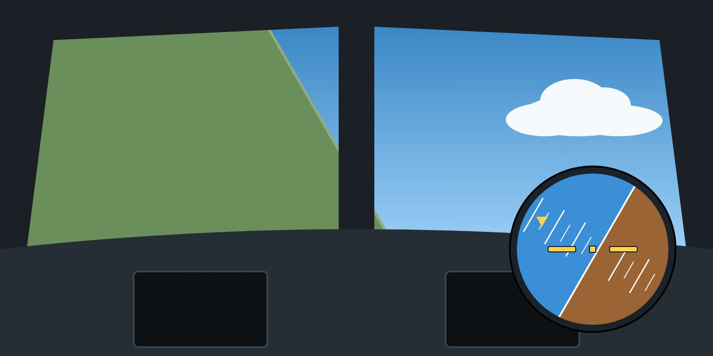

Calculate load factor in a level turn and its effect on stall speed.
State the structural limit load factors of transport aeroplanes and the meaning of manoeuvring speed.
Apply g-awareness during upset recovery.

A 60° level turn means 2 g — and a stall speed 41 % higher.
Load factor
Load factor (n) is the ratio of lift to weight, felt as "g". In straight and level flight n = 1. In a level turn the wing must produce extra lift to hold altitude:
n = 1 / cos(bank angle) — 30° gives 1.15 g, 45° gives 1.41 g, 60° gives 2 g.
In a level turn, load factor rises steeply above 45° of bank, and the stall speed rises with it. Unloading (reducing g) lowers the stall speed again.
Load factor and stall speed
Stall speed increases with the square root of the load factor: VS(n) = VS × √n. At 60° of bank (2 g) the stall speed is about 41 % higher. This is why steep turns at low speed are dangerous, and why unloading — relaxing back pressure to reduce g — is a powerful way to lower the stall speed and the angle of attack during recovery.
Structural limits
Transport aeroplanes are typically designed for limit manoeuvring load factors of +2.5 g to −1.0 g with flaps retracted, and +2.0 g to 0 g with flaps extended. Check your AFM.
Exceeding these limits may cause permanent structural deformation; the ultimate load (1.5 × limit) is where failure may occur.
Rolling and pulling at the same time (a "rolling pull") produces asymmetric loads, which have lower limits.
Manoeuvring speed (VA)
Below VA, a single full deflection of one flight control in one axis should not exceed structural limits. VA does not protect against:
full deflections in more than one axis at the same time;
rapid alternating or reversing inputs, especially of the rudder (Lesson 8 — American Airlines 587).
g-awareness in recovery
In a nose-high recovery, reduced or even slightly negative g (unloading) is often needed. It may feel uncomfortable; loose objects and unrestrained people can be thrown about.
In a nose-low recovery, roll wings level before pulling, then pull smoothly — avoiding both the stall warning and excessive g.
The sensation of g is not a reliable indicator of attitude; use the instruments.
Key takeaways
Level turn: n = 1/cos(bank); 60° of bank = 2 g.
Stall speed rises with √n: +41 % at 2 g. Unloading lowers stall speed and angle of attack.
Typical limits flaps up: +2.5 g / −1.0 g. Avoid rolling pulls.
VA does not protect against multiple-axis or alternating full inputs.
Knowledge check
An aircraft with a 1 g stall speed of 120 kt is in a level 60° bank turn. What is its approximate stall speed?
120 kt
about 140 kt
about 170 kt
240 kt
Answer: C. 60° of bank gives 2 g; √2 ≈ 1.41; 120 × 1.41 ≈ 170 kt.
Training material only. It does not replace the Aircraft Flight Manual, FCOM, QRH, MEL or the Domestic Airlines Operations Manual, which always take precedence.